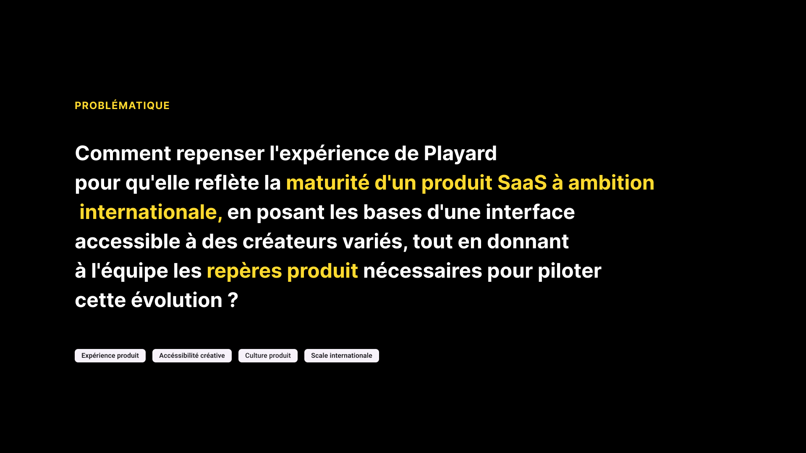
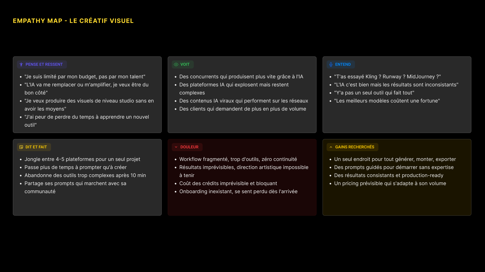
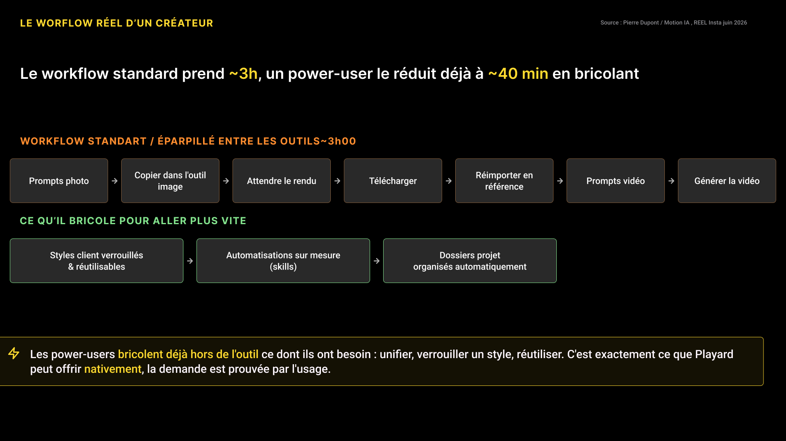
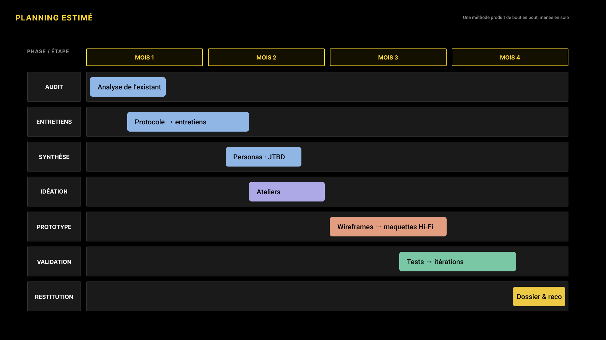
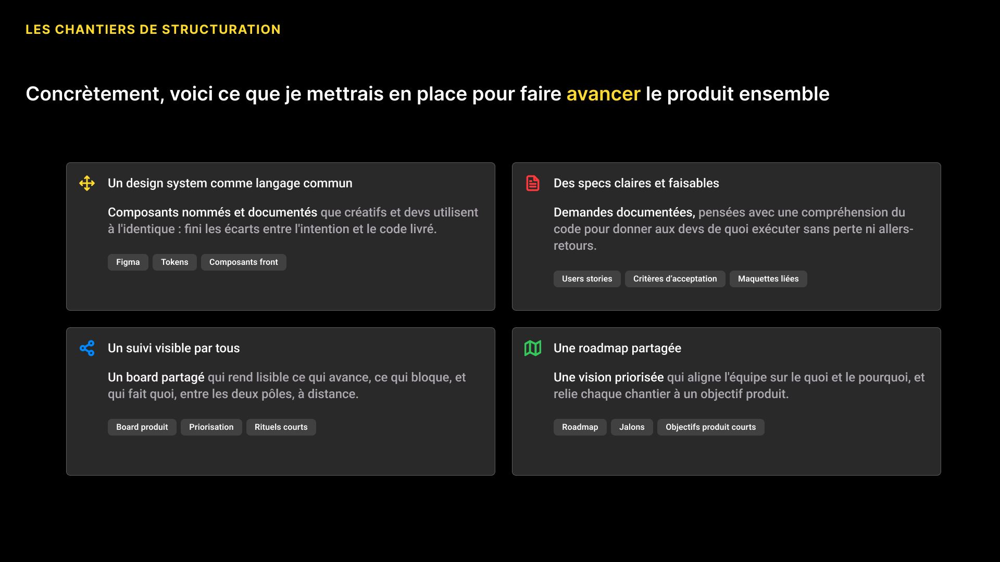

Playard est une plateforme IA de création visuelle pour musiciens, réalisateurs et créateurs de contenu. Mission : structurer la démarche produit d'une équipe d'experts créatifs, sur un secteur que je ne connaissais pas.
Problèmeéquipe d'experts créatifs, aucune culture produit formalisée→Solutionrecherche utilisateur, cadrage et méthode produit→Résultatréflexion produit restructurée, intégration proposée
Objectif
Donner à une équipe créative les repères produit nécessaires pour piloter le passage à l'échelle, sans rien perdre de sa force créative.
Rôle
Consultante produit Recherche utilisateur Cadrage et méthode
Restitution
Six experts audiovisuels puis la direction générale

COMPRENDRE LES CRÉATEURSPERSONAS · EMPATHY MAP
Sortir du SaaS métier que je connaissais pour comprendre un public entièrement différent : réalisateurs, créateurs de contenu, artistes 3D, agences créatives. Entretiens et synthèse pour objectiver leurs outils réels, leurs frustrations et ce qu'ils attendent vraiment de l'IA.
Personas / quatre profils créatifs cibles, leurs outils actuels, leur frustration principale et ce qu'ils demandent.

Empathy map / ce que le créatif visuel pense, voit, entend et subit, jusqu'aux gains qu'il recherche.
LE TERRAINWORKFLOW RÉEL

Reconstitution du parcours réel d'un créateur, outil par outil. Le constat qui a fait basculer la discussion : les power-users bricolent déjà hors de la plateforme ce qu'elle pourrait offrir nativement. La demande n'était pas à supposer, elle était prouvée par l'usage.
STRUCTURERMÉTHODE · CHANTIERS

Une méthode de bout en bout / audit, entretiens, synthèse, idéation, prototype, validation, restitution.

Les chantiers de structuration / design system comme langage commun, specs faisables, suivi partagé, roadmap priorisée.
RÉSULTATRESTITUTION
Présentation à une équipe de six experts audiovisuels, puis à la direction générale. La restitution a recadré la problématique produit et restructuré la réflexion de l'équipe, qui a proposé de m'intégrer.
Confidentiel
L'analyse concurrentielle, la carte de positionnement, le prototype navigable et les recommandations de croissance ne sont pas publiés. Je les présente volontiers en entretien.